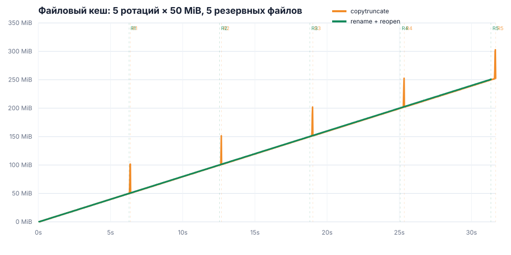

Ротация логов Envoy
Влияние copytruncate и rename + reopen на файловый кеш, лимит памяти контейнера и целостность логов.
Copytruncate копирует активный лог в новый файл и затем обрезает исходный. При свободной памяти это почти удваивает скорость роста файлового кеша и создаёт дополнительный пик примерно на размер лог-файла. Алгоритм также теряет записи, сделанные между окончанием копирования и обрезанием исходного файла.
Rename + reopen переименовывает активный файл и переключает Envoy на новый. В выполненных тестах его потребление памяти совпало с обычной записью без ротации; потери записей не обнаружены.
Copytruncate: пик кеша
Одна ротация файла 50 MiB, лимит контейнера 192 MiB.
Rename + reopen: пик кеша
Практически совпадает с записью без ротации: 49,5 MiB.
Потери copytruncate
Воспроизведены при лимитах 68, 192 и 768 MiB; от OOM не зависят.
Лимит памяти контейнера
Для каждого сценария указан наименьший проверенный лимит, при котором завершились все три запуска. Шаг между значениями — 4 MiB; подкачка отключена.
| Сценарий | Меньший проверенный лимит | 3 из 3 запусков завершились |
|---|---|---|
| Copytruncate, 50 MiB, одна ротация | 64 MiB: завершились 2 из 3 | 68 MiB |
| Copytruncate, 100 MiB, одна ротация | 68 MiB: 3 OOM из 3 | 72 MiB |
| Без ротации, запись 100 MiB | 52 MiB: завершились 2 из 3 | 56 MiB |
| Rename + reopen, 100 MiB, одна ротация | 52 MiB: завершились 2 из 3 | 56 MiB |
| Copytruncate, 200 MiB, одна ротация | 68 MiB: завершились 2 из 3 | 72 MiB |
| Без ротации, запись 200 MiB | 52 MiB: завершился 1 из 3 | 56 MiB |
| Rename + reopen, 200 MiB, одна ротация | 52 MiB: завершились 5 из 6 в двух сериях | 56 MiB |
| Copytruncate, 50 MiB, пять ротаций | 64 MiB: 3 OOM из 3 | 68 MiB |
| Rename + reopen, 50 MiB, пять ротаций | 52 MiB: завершился 1 из 3 | 56 MiB |
Рост лимита с размером файла не обнаружен. Для copytruncate получено 68 MiB при файле 50 MiB и 72 MiB при файлах 100 и 200 MiB. Для rename + reopen файлы 100 и 200 MiB прошли при 56 MiB. Разница 68/72 MiB равна одному шагу теста, а один разведочный запуск copytruncate 200 MiB получил OOM при 72 MiB. Поэтому эти значения показывают порядок требуемой памяти, но не точную границу.
Файловый кеш при лимите 768 MiB
Пять ротаций файлов по 50 MiB выполнялись при лимите 768 MiB. Ядру не требовалось освобождать кеш из-за нехватки памяти.

| Стратегия | Максимальный кеш | Кеш после пяти ротаций | Максимальная память контейнера | Наклон линии между ротациями | Дополнительный пик копирования | Потеряно записей |
|---|---|---|---|---|---|---|
| Copytruncate | 302,88 MiB | 252,65 MiB | 366,02 MiB | 8,22–8,39 MiB/s | +47,6 MiB | 1778 |
| Rename + reopen | 250,99 MiB | 250,99 MiB | 312,70 MiB | 8,00–8,01 MiB/s | 0 | 0 |
Между ротациями обе линии растут с одной скоростью — около 8 MiB/s, как и заданная скорость записи логов. Copytruncate отличается короткими скачками во время копирования: к кешу добавляется около 47,6 MiB. После обрезания исходного файла этот объём исчезает.
Файловый кеш при малом лимите памяти
| Сценарий | Лимит контейнера | Максимальная память процессов | Максимальный файловый кеш |
|---|---|---|---|
| Copytruncate, 50 MiB × 1 | 68 MiB | 48,1–50,4 MiB | 15,8–17,9 MiB |
| Copytruncate, 100 MiB × 1 | 72 MiB | 49,2–52,9 MiB | 17,7–21,6 MiB |
| Без ротации, 100 MiB | 56 MiB | 47,6–49,4 MiB | 6,8–8,7 MiB |
| Rename + reopen, 100 MiB × 1 | 56 MiB | 48,8–50,0 MiB | 6,4–8,3 MiB |
| Copytruncate, 200 MiB × 1 | 72 MiB | 49,3–51,4 MiB | 19,6–21,7 MiB |
| Без ротации, 200 MiB | 56 MiB | 48,9–49,7 MiB | 6,6–6,7 MiB |
| Rename + reopen, 200 MiB × 1 | 56 MiB | 46,6–50,3 MiB | 6,5–8,4 MiB |
| Copytruncate, 50 MiB × 5 | 68 MiB | 48,4–51,7 MiB | 15,5–19,2 MiB |
| Rename + reopen, 50 MiB × 5 | 56 MiB | 49,0–52,3 MiB | 6,3–8,7 MiB |
Пять резервных файлов занимали 250 MiB на диске. При лимите контейнера 68 MiB файловый кеш не превышал 19,2 MiB. Таким образом, пять файлов на диске не занимали 250 MiB оперативной памяти.
Нагрузка на CPU и диск
| Ресурс | Copytruncate | Rename + reopen | Основание |
|---|---|---|---|
| Объём I/O на одну ротацию 50 MiB | Дополнительно прочитать 50 MiB, записать 50 MiB и выполнить fsync | Переименовать файл и продолжить обычную запись | Следует из алгоритмов |
| CPU | Обработать копирование, fsync и освобождение кеша | Обработать переименование и обычную запись | CPU в тесте не измерялся |
| Физический диск | Записать созданную копию; чтение может выполняться из кеша | Вторая копия файла не записывается | Физический I/O в тесте не измерялся |
Освобождение кеша уменьшает потребление памяти, но не отменяет копирование. При малом лимите эта работа может конкурировать с Envoy за CPU и диск. При большом лимите скопированные данные дольше остаются в кеше и занимают память хоста. Точный расход CPU, задержка диска и объём физических операций требуют отдельного измерения.
Целостность логов
Скорость записи во всех тестах составляла 8 MiB/s. Одна запись занимала 512 байт; writer создавал 16 384 записи в секунду.
Copytruncate
| Сценарий | Потеряно записей за один запуск |
|---|---|
| 50 MiB, лимит 68 MiB, одна ротация | 156–905 |
| 50 MiB, лимит 192 MiB, одна ротация | 373–618 |
| 50 MiB, лимит 768 MiB, пять ротаций | 1778 |
| 200 MiB, лимит 72 MiB, одна ротация | 1681–5421 |
Rename + reopen
Во всех выполненных проверках отсутствующие, повторяющиеся и повреждённые записи не обнаружены.
Диапазоны показывают минимальное и максимальное число пропущенных последовательных идентификаторов среди успешно завершившихся запусков. Для файла 200 MiB потеря 1681–5421 записей соответствует 0,82–2,65 MiB логов, или 0,10–0,33 секунды потока при скорости 8 MiB/s.
Потери copytruncate вызваны порядком операций, а не лимитом памяти. Envoy продолжает писать в активный файл во время его копирования. Записи, добавленные после достижения конца файла копирующим процессом, но до последующего обрезания файла, отсутствуют и в резервной копии, и в новом активном логе. fsync сохраняет уже скопированные данные, но не устраняет это окно.
Выводы
- Copytruncate добавляет полный проход чтения и записи по лог-файлу. При достаточном лимите памяти это увеличило пик файлового кеша с 49,8 до 100,4 MiB для файла 50 MiB.
- При пяти ротациях copytruncate создавал временный пик на размер одного дополнительного файла, но не оставлял постоянную вторую копию каждой ротации в кеше.
- При ограниченной памяти copytruncate работал с лимитом 68 MiB, а rename + reopen — с лимитом 56 MiB. Разница составила 12 MiB. Пик 48 MiB появлялся только при большом свободном запасе памяти; при малом лимите Linux не оставлял весь этот объём в кеше.
- Увеличение файла со 100 до 200 MiB не изменило проверенные лимиты: 72 MiB для copytruncate и 56 MiB для rename + reopen.
- Copytruncate терял записи при всех проверенных лимитах. Rename + reopen потерь не показал и по памяти совпал с обычной записью без ротации.
Рекомендация
/reopen_logs. Перед внедрением повторить тест с настоящим Envoy на целевой версии ядра, файловой системе и storage class. Абсолютные лимиты 56–72 MiB относятся только к тестовому контейнеру и не являются рекомендацией для production.
Методика и ограничения
- Эмулятор Envoy — отдельный процесс на C++17; pilot-agent, сборщик метрик и управляющий процесс — на Go.
- Проверены файлы 50, 100 и 200 MiB; для 50 MiB дополнительно проверена серия из пяти ротаций.
- Скорость записи — 8 MiB/s; запись — 512 байт; буфер — 64 KiB; сброс — не реже 100 ms.
- Дополнительная постоянно используемая память — 32 MiB.
- Для каждого запуска создавался новый дисковый Docker volume; tmpfs не использовался.
- Стенд сравнивает алгоритмы, но не воспроизводит allocator, рабочие потоки и access log настоящего Envoy.
- Первый широкий прогон copytruncate 50 MiB дал 88 MiB, повторная серия — 68 MiB. Граница OOM зависит от состояния Linux VM и не воспроизводилась между сериями как абсолютное значение.
- Для доказательства влияния размера файла нужны меньший шаг, больше повторов и чередование запусков разных размеров.
- Копирование выполнялось через
copy_file_range. Вероятная причина небольшого кеша при жёстком лимите — освобождение уже обработанных страниц во время копирования. Счётчикиpgscan/pgstealне записывались, поэтому эта причина не доказана напрямую.
Воспроизведение и исходные данные
./scripts/compare-50m-5x.sh ./scripts/memory-sweep-50m.sh ./scripts/pressure-boundaries.sh
- Пять ротаций по 50 MiB
- Copytruncate 100 MiB при 72 MiB
- Copytruncate 100 MiB при 68 MiB
- Copytruncate 5 × 50 MiB при 68 MiB
- Обычная запись 200 MiB
- Разведочный поиск copytruncate 200 MiB
- Copytruncate 200 MiB при 68/72 MiB
- Rename + reopen 200 MiB
- Повторная проверка rename + reopen при 52 MiB
- Трассировка copy_file_range + fsync
- Описание стенда и формата результатов